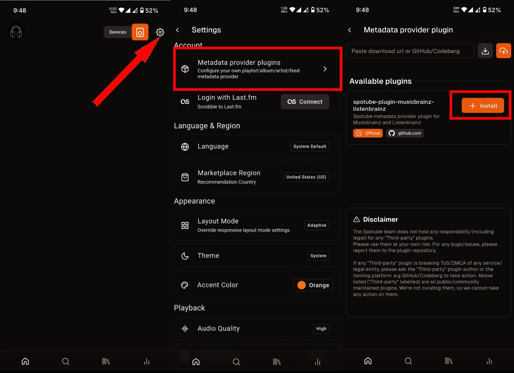

把Spotube嵌进我的独立音乐周报工作流：从搜歌到网盘分享一条链
每周挖独立乐队新专辑、下载带封面歌词的音频、同步ListenBrainz、自动进网盘——以前四步工具切换，现在Spotube一条链搞定，讲具体怎么接。
我每周要做一件事：从YouTube和Spotify上挖独立乐队的新专辑，下载成带封面、带ID3标签、带时间同步歌词的本地音频文件，整理好丢到坚果云的共享文件夹，然后在音乐群里发一份本周更新清单。这件事以前要切四个工具，手动操作十几分钟；现在Spotube一条链跑通，我只负责开头搜一下、结尾确认一下。
旧流程是什么样的
先说说以前怎么干，你就能感受到Spotube解决了什么。
搜歌阶段用Spotify Web Player找专辑名称和艺人，复制粘贴到yt-dlp命令行里下载YouTube音频流。下载完的文件没有任何ID3标签——艺人、专辑名、封面图全空，得手动拖进Mp3tag一个一个填。歌词又得跑去LRCLib搜，找到合适的.lrc文件重命名成同名放旁边。最后把整理好的文件挪到坚果云同步文件夹，写群消息的时候还要一条一条确认文件有没有齐。
中间最烦的是mp3tag的封面图，经常下到低清的，或者尺寸不对被播放器切边。还有歌词，LRCLib上有些冷门独立乐队的歌词根本搜不到，只能去乐队Bandcamp页面手动抄时间轴。整套流程下来，每周至少要花二十多分钟，而且每个环节都可能断——yt-dlp偶尔跑飞编码格式、Mp3tag批量操作偶尔把同专辑不同艺人的标签覆盖错、坚果云同步延迟导致我发群消息时文件还没传完。
新流程：Spotube插在哪一环
Spotube的官网上介绍，它是一个免费开源的跨平台音乐播放器，插件架构让它可以从完全不同的音频源获取曲目、元数据、歌词和播放记录。从Spotube下载拿到安装包后，我把它插进了我这套工作流的核心——它负责搜、拉、写、记四个动作，替代了yt-dlp + Mp3tag + LRCLib + 手动记账这四个环节。
具体接起来是这样的：
- 搜：Spotube打开后，左侧的MetadataSearchAPI插件选Spotify（它调Spotify的官方搜索API），我在搜索框敲"本周新专辑 indie"或者直接输已知的乐队名，Spotube立刻返回曲目列表，每条都带着艺人、专辑、封面图、发行日期——这些元数据是Spotify官方的，比我自己手动搜再填要准得多。
- 拉：选中要下载的专辑，点下载按钮。Spotube的AudioAPI插件用YouTube Audio源（支持HTTP Range请求，v5.1版本并行分块下载默认3个连接），自动拉取音频流、合并成MP3或FLAC文件。
- 写：下载完成后Spotube自动调用metadata_god包写入ID3标签——艺人、专辑、封面图、发行日期一个不落，同专辑的多首歌自动按track number排序。LyricsAPI插件同时去LRCLib搜时间同步歌词，配对成同名.lrc文件。这两步完全无感，下载完我打开文件看标签已经填好了。
- 记：ScrobbleAPI插件连我的ListenBrainz账号，每首歌的播放记录自动上报——以前我忘了Last.fm手动记录就丢了一整周的统计，现在Spotube后台默默就做完了。

下载目录我直接设成了坚果云的同步文件夹——Spotube下载完的文件自动出现在坚果云里，坚果云后台同步完成后我只需要写群消息。少了两次手动复制、一次手动填标签、一次手动搜歌词——这四个环节以前加起来要占我大半的时间。
实操里最容易断链的两个环节
音频源不支持Range请求导致下载卡壳
Spotube v5.1的并行分块下载依赖HTTP Range header——服务器需要支持返回文件的某一段，Spotube才能用多个并发连接同时拉不同的块，具体原理在Spotube文档里有完整说明。如果你换用了某些自建的Piped实例或者第三方音频源，它们可能不支持Range请求，Spotube就会退化成单连接串行下载，速度慢一半而且容易卡。
判断方法很简单：去Spotube的下载管理器（设置 → Downloads），看任务状态。如果长时间停在Downloading但速度显示0 KB/s，点进去看错误详情，大概率就是Range不支持。
解法也简单：换音频源。Spotube的AudioAPI接口可以装多个实现，YouTube Audio官方源肯定支持Range，这是Spotube默认推荐的源。我试过装Invidious实例做备用，但那几个自建实例偶尔会抽风，还是YouTube官方源稳。下载管理器里Failed状态的任务右键可以直接Retry，Spotube会重新走一遍下载链路。
Android上Scoped Storage把下载目录锁了
我日常用Windows桌面端，偶尔在Android手机上也下几首歌出门听。Android API 30+的Scoped Storage限制了外部应用的文件访问权限，Spotube默认下载到应用私有目录——这个目录只有Spotube自己能读写，手机文件管理器看不到，也没法共享到其他App。国产ROM（MIUI、ColorOS）在这方面卡得更严，有时候Spotube甚至会静默失败。
解法是手动改下载目录：设置 → Downloads → 把下载路径改到系统音乐目录 ~/Music/Spotube Downloads/。这个路径在Scoped Storage的白名单里，所有App都能访问，文件管理器能看到，分享也方便。改完之后Android端的下载和桌面端的体验就一致了。

效果和边界：什么时候这套流程不划算
说实话，接了Spotube之后，我每周做这件事的时间从二十多分钟降到了不到五分钟——大部分时间其实是在Spotify上搜新专辑本身，剩下Spotube一条龙就跑完了。少了四个工具切换、少了手动填标签、少了歌词搜不到的焦虑，这是最实的变化。
但这套流程也有边界。
第一，iOS侧载麻烦。Spotube没有App Store版本，iPhone用户要用AltStore或Sideloadly侧载IPA，免费Apple ID签名7天过期还要重签。我之前试过在iPad上装，AltStore重签忘了续期过两次，Spotube直接变灰打不开。iOS端不如桌面端和Android端省心。
第二，某些极端小众的音频源可能没有插件。Spotube的四类接口（MetadataSearchAPI、AudioAPI、LyricsAPI、ScrobbleAPI）每个都需要对应的插件实现——如果你想听一个只在某个东南亚小众平台有的专辑，很可能找不到AudioAPI插件。不过对我来说，Spotify元数据 + YouTube音频这一对组合已经覆盖了90%的独立音乐场景，剩下那10%我也很少碰。
第三，插件版本和Spotube主版本要匹配。v5.1新增了FLAC无损AudioAPI支持和abilities徽章，用v5.0.x的插件在v5.1上跑可能会出问题。插件作者需要在Release里写明兼容的Spotube版本范围，用户升级Spotube之前最好检查一下自己装的插件有没有对应的新版本。
不过这些边界都是小问题，日常使用几乎碰不到。Spotube核心解决的那个问题——搜歌、下载、写标签、找歌词、同步播放记录这一串动作之间的手动衔接——是真的省事。我之前为了这串动作折腾过yt-dlp的Python封装、Mp3tag的批量脚本、LRCLib的爬取工具，全都没Spotube一个插件架构来得干净。它本质上就是在说：这些环节本来就该是一条链，不该是四个工具各自为政。
Spotube的插件架构让它能接不同的音频源、元数据服务和scrobble服务——如果你不做独立音乐周报，也可以把它嵌进别的工作流。比如你用Last.fm而不是ListenBrainz，换个ScrobbleAPI插件就行；比如你想听更高音质，切FLAC格式下载就行。它的灵活性正在于每个环节都可以单独替换，但默认配置下已经足够好用。这套工作流的完整说明我同步到了三个仓库，方便不同网络环境下都能拿到：GitHub、Gitee和GitCode上都有Spotube的文档目录，里面包含了我整理的Spotube v5.1下载链路详解、插件架构入门、iOS侧载指南和插件开发分发流程，后续Spotube版本更新时我会同步维护。